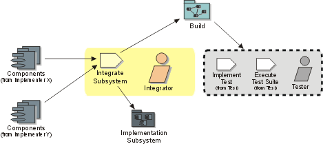

Disciplines >
Disciplines >
 Implementation >
Implementation >
 Workflow >
Integrate Each Subsystem
Workflow >
Integrate Each Subsystem
Disciplines >
Implementation >
Workflow >
Integrate Each Subsystem
Workflow Detail:
|
Topics |
 |
If several implementers work (as a team) in the same implementation subsystem, one of the team should be responsible for integrating the new and changed components from the individual implementers into a new version of the implementation subsystem. The integration results in series of builds in a subsystem integration workspace. Each build is then integration tested by a tester. Following testing, the implementation subsystem is delivered into the system integration workspace.
Integration is typically carried out by a single person (for a small project on which the build process in simple) or a small team (for a large project on which the build process is complex). The integrators need experience in software build management, configuration management, and experience in the programming language in which the components to be integrated are written. Because integration often involves a high degree of automation, expertise in operating system shell or scripting languages and tools like 'make' (on Unix) is also essential.
Integration work is typically automated to a large degree, with manual effort
required when the build breaks. A frequent strategy is to perform automated
nightly builds and some automated testing (usually at the unit level), allowing
for frequent feedback from the build process.
|
Rational Unified
Process
|